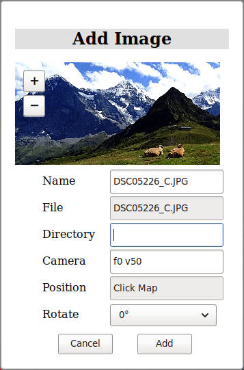
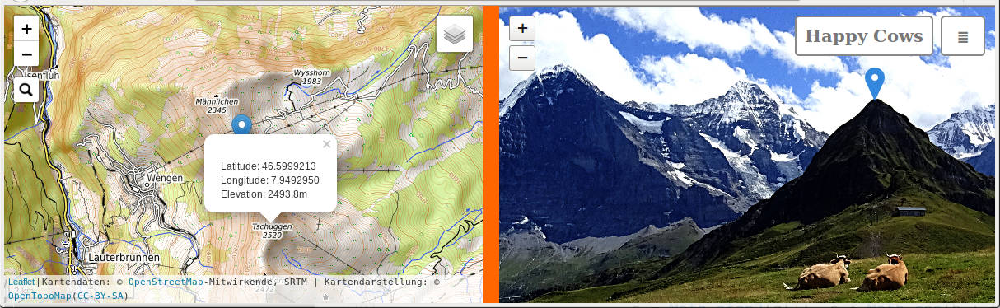
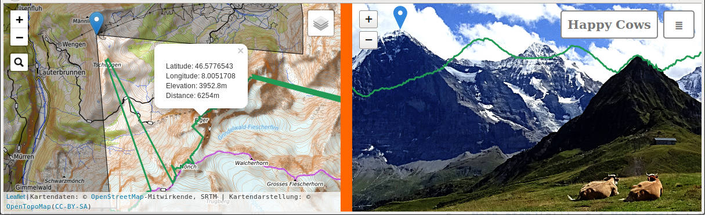
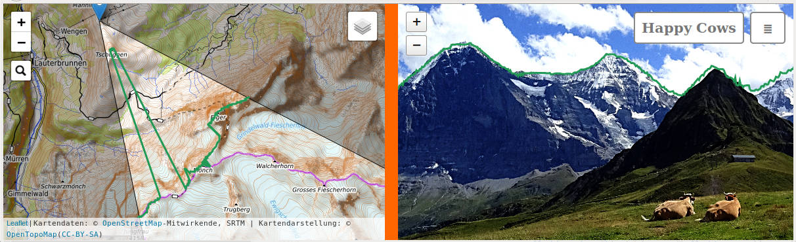
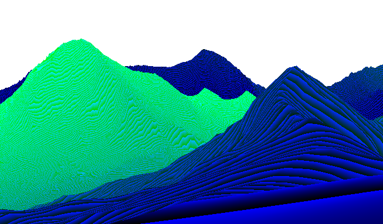

GeoImageViewer
Edit Mode
General Remarks
GeoImageViewer runs inside webbrowsers. While this enables almost any platform
to execute the program, it also applies severe security restrictions. Especially
any access to the local file system is difficult, which makes the usual load and save
operations tedious. Unfortunately,we need loads and saves when editing stuff:
Loading the program
from local storage is allowed in some (Firefox) but not in all (e.g. Chrome) browsers.
In these cases the program files have to be served through a local webserver
which is easy but annoying. See this page
for solutions. The simplest working solution is:
- Install Python (Available for Windows, preinstalled on most Linux and MacOS installations)
- Navigate to the folder containing the file
main.html
- Execute
python -m SimpleHTTPServer or, if you have python3:
python3 -m http.server
- Open the address
http://127.0.0.1:8000/main.html in your browser.
Loading Files
from local storage uses the 'upload' feature of HTML. So whenever a file is
required by the program, and a file dialog shows up, it is labeled with
a 'select files to upload' message. Actually, nothing is ever 'uploaded'
but all data are processed locally.
Saving Files
to local storage is prohibited by all browsers. The workaround in GeoImageViewer
opens a new browser window, which contains the to-be-saved data. The user then has to manually
save them using the browsers 'File' menu or by right-clicking the content.
It is important to save them correctly, and
there is no way for GeoImageViewer to help the user here:
1. JSON-data have to be saved as textfiles, not html or anything else. Also, the saved
filename must have an extension .json
2. Images created by GeoImageViewer are rendered in a new window, and have to be saved by
right-clicking on the image which brings up the browser's 'save graphics' dialog.
There are more annoyances like the browser nagging to stop the 'unresponsive' script
and the failure to warn for unsaved changes etc.
Elevation Data
Geographic linking between map and image is computed through 3d data.
Two types of data are supported by GeoImageViewer:
- Elevation grids like SRTM-tiles or derived data.
Elevation or altitude above sea level is provided as a number for
each point on a geographical grid.
- Depth-maps specifying distances between camera and earth surface
for every pixel in the image. See the tutorial below for an example.
In Display Mode the program works almost identical with either type of
3d-data, but is faster with depthmaps.
When an image is loaded in this mode, the program searches for a depthmap specification.
If none is provided, it expects to find SRTM-tiles.
Edit Mode, however, always requires SRTM tiles.
To prepare images for GeoImageViewer we therefore have to start
using a setup in Edit Mode and align the image there. For viewing
we can then optionally let GeoImageViewer create a depthmap for
each image. The filesize of this depthmap is often smaller than the
image's filesize, whereas SRTM-tiles are much larger, and several
might be needed for a single image.
In Edit Mode the program expects to find all required tiles
in the SRTM-directory where they have to be placed before we can proceed.
They can be downloaded from NASA-servers,
and come as zipped SRTMHGT files at 1-arcsecond resolution (3601x3601 points) in a latitude/longitude projection (EPSG:4326). This
downloader might be helpful.
A free NASA Earthdata login is required.
The same tiles can also be downloaded from within the GeoImageViewer application: Whenever
a tile is missing for a requested task the program opens a download window to
fetch it from the NASA-website. The coarser 3-arcsecond resolution tiles (1201x1201 pixels) can also be used,
as well as enhanced versions of both sets of tiles, which are provided by several sources, e.g.
here for Europe.
The application can use them as long as they adhere to the general data layout (array of
big-endian shorts, either 'zip'- or 'gzip- or un-compressed), and named using the latitude/longitudes of the southwest corner like 'N48E015' for 48° latitude / 15° longitude (S/W for negative values). The filepath and name-template is set via the javascript variable
Elevation.url = "SRTM/*.SRTMGL1.hgt.zip"
where the program will replace the *
by the string 'N48E015' in the example. The url must be relative to the main.html-file, or absolute. This is the name that works for tiles from the NASA-server. It should be changed if other tiles or directories are used. It is also possible to specify an array of templates,
which will be processed in order, and which makes it possible to work with sets of different tiles.
See the file main.html of this distribution for an example. Note: Providing unzipped data significantly enhances
the speed of the program.
It is also possible to provide SRTM-tiles as color-coded png-images. The distribution contains a
java-program (ElevationPNG) which allows the user to convert a normal SRTM-tile into such an image, where elevation is coded as
elevation / m = red * 256 + green
and negative altitudes in 2-s complement. See the source code ElevationPNG.java for details.
Using this format has two advantages:
This is the only way to run GeoImageViewer in Edit Mode without local webserver. For this
to work, Firefox is needed.
Tilesize and loading times are smaller than using original tiles.
The srtm.js-module is not required.
The parameter Elevation.url has to be set as above. The example installation uses this
option with two tiles which can be used to repeat the tutorial example below. For bandwidth reasons those
tiles are cropped to the area covered by the example image. They should be upgraded to full coverage
for any serious work. To just follow the tutorial, we have to edit the file main.html and uncomment the line
Elevation.url = "SRTM/*.png";
Georeference
To link images to maps we need three sets of parameters:
- Geographical location of the camera (latitude, longitude, altitude)
- Optical parameters of the camera (lens and sensor).
- Orientation angles (pitch, yaw, and roll, or pan, tilt, rotation).
The program provides means to determine all these values, which is
the subject of this and the next chapter.
To start GeoImageViewer in edit mode we have to append the parameter
?edit to the URL:
http://127.0.0.1/main.html?edit
or open the main.html-file in a texteditor and set the parameter
ImageMapViewer.options.edit = true;
Clicking
the ≣-button brings up a file dialog, and we can open
our to-be-aligned image. Our example image is located in the
'images'-folder. The following dialog window is displayed (left).

These parameters can be set:
- Name - will be used to display and reference the image in GeoImageViewer. (default: Filename)
- Directory - relative to the main html-file. GeoImageViewer tries to guess, but, for security reasons,
has no means to determine it.
- Camera - the camera in PanoTools notation. See appendix for options.
f0 v50 is a normal (i.e. rectilinear)
lens with 50° field-of-view. If nothing else is known, this might be a good starting value. If PanoTools paramaters
are known, they can be pasted into this field.
- Position - click the map at the approximate camera location to get this value. This is the only action which
is required by the add-image dialog. If the program complains about missing elevation-data, it is now time to
add the required tile(s). The download window might be of help.
- Rotate - by 0°, 90° or -90°. Images taken in portrait-orientation are displayed correctly using this
option. Note that the camera parameters (field-of-view, etc) always refer to the landscape value, even if the image
is rotated.
We end up with the right window
and can click Add, which loads the image in GeoImageViewer, and puts a mark at the map location.
If you want to follow this example, and cannot find the location, just load the file example.json from
the Images-directory instead of the example image, which will advance you to this point in
the workflow. If you have georeferenced images from a camera, which adds gps-parameters
as EXIF-data, then you can create a suitable JSON-file from these data using a texteditor,
and start the alignment procedure from this point.
We have now georeferenced the image but not yet aligned. We also have an image button tagged with the name
of the image (Happy Cows) Clicking the image->Export JSON field displays a
window with what we have so far:
[
{
"url": "Images/DSC05226_C.JPG",
"cam": "w1959 h1150 p0 y0 r0 f1 v80 ",
"pos": "f12 d7.943115 e46.610771 h2224.87",
"name": "Happy Cows",
"rot": 0,
"cpts": []
}
]
The camera is specified as cam-property in PanoTools-format: lenstype f and field-of-view
v had been set in the opening dialog, width and height have been read from the image
and set by the program, and the direction p0 y0 r0
is unspecified yet. The position (pos-property) follows the PanoTools-format with a virtual
camera f12 (just for internal reference, can be omitted) and latitude, longitude and elevation
as d, e, and h-parameters.
These data can be saved using the browser's save dialog (textfile with extension .json),
and can be edited with a plain-text editor. To create a list of images to be
displayed, create a JSON-textfile with a list of image descriptions like:
[
{
"url": .....
..
},
{
"url": ...
..
},
{
},..
]
or save this list (after adding several images) using ≣-> Save List.
We can then view a gallery of georeferenced images, and click on the icons in the map
to bring up those images. All we have to do is open this JSON-file after clicking ≣.
Alignment
Aligning the image is more difficult, and requires setting control points. We search for
identifiable and corresponding features in map and image like the close mountain Tschuggen
in the example. To select features, zoom in, and first click the map, then the image. The marker
in the image can be moved and readjusted, but not the popup in the map.

After adjustment,
press Add 0 in the image-menu,
then image->Align->pyr, which optimizes the orientation (3 angles pitch, yaw, roll).
Press Apply, and
the image parameters are updated (not saved to file, this has to be done using Export JSON).
The map image changes: Now that orientation is set, the field-of-view is shown in the mapview.
To test the alignment we turn on the horizon (image->Horizon->show), and see that the green line is
squeezed with respect to the real horizon.
The field-of-view (Hfov) is obviously wrong. We choose
a second control point, the summit of Eiger. When we click the map, the corresponding
location in the image is also displayed, but obviously wrong. We move this marker in the image to the
'right' spot, i.e. where the Eiger summit is located in the image. The following screenshot shows this stage:

We make sure that the
marker in the map still points to the Eiger summit there, and press image->Add 1,
then Align->Hfov-pyr. We get improved values for Hfov and orientation, and Apply those.
Looking at the horizon now shows better agreement.

In this fashion we can add more points, optimize either just pyr, field of-view and orientation,
or location and pyr. The Levenberg-Marquardt solver (LMSolver) allows the user to optimize
any of the camera parameters in the PanoTools camera model. The appendix describes some technical details
of the algorithms.
It is advisable to reexamine
and adjust previously set control points using the Show-Control point feature. The selected
control point is then shown using two markers: A green one pointing to the location computed
by the program, and a blue one pointing to the clicked point in the image. Obviously, the two
should coincide. The blue one can be readjusted and changed (image->change), or the point
may be deleted (image->remove). It might take
10 or more control points for a reasonable fit, and sometimes points just won't work,
especially close locations, which amplify errors.
Control points can be saved in the JSON-file. They are used in Display mode (only there!)
as morph points, and the georeference is locally corrected. That means that even a poor fit (see
San Francisco example) results in accurate display if enough control points are provided.
Depthmap and JSON-Parameters
Optionally, we can now generate a depthmap of our image using the image->Depthmap option.
With such a depthmap it is possible to view and present the image later without access to SRTM-tiles.
By default the depthmap will be scaled down by a factor of 2 relative to the original image,
this scaling factor can be set using image->scale. When creating the depthmap the browser
will complain about blocking scripts, the console has some progress information for impatient
users. The depth
value is color coded according to the formula
depth / m = (red * 256 * 256 + green * 256 + blue) / 10

The depthmap must use the PNG-format. It can be compressed to smaller
filesizes using graphics utilities, e.g. opening and resaving in 'The Gimp'
with maximum compression level shrinks the file considerably without loosing data.
Other image manipulations
might corrupt the encoded data.
The url of the depthmap must be manually
added to the JSON-file with the tag "depth":
....{
"url": "Images/DSC05226_C.JPG",
"depth": "Images/DSC05226_C_depth.png",
...
More data can be added to the JSON-file, which influences the display:
- attr: Attribution or copyright string.
- date: Date string
- info: arbitrary html-formatted text as array of quoted strings, see the file
images.json
for an example. (1)-(3) are displayed when the user selects image->info.
- track: One or several tracks with properties name for displayed name, and url for
the url of the file, which might either be in gpx, kml or tur-format. If the property ele is set to
true, elevation for this track will be read from the trackdata, otherwise from the installations 3d-data (default).
This property should be set if the track is above ground level like a drone-flight or paraglider path.
- thm: Thumbnail image in base64 encoding. This image is displayed when hovering the menulist
or the map. It can be created using image->Create Thumbnail.
Postprocessing
Processing of images, which changes pixel positions, has to be specified in
the JSON-file to enable GeoImageViewer to compensate for the changes.
Selection Rectangle. If the displayed image is a rectangular selection
taken from the original photograph, then the "cam" line of the JSON file
has to include a parameter 'Cx1,x2,y1,y2' where x and y are the pixel coordinates
of said rectangle. Example:
"cam": "y157.95 w5500 h2752 f1 v145 C1200.0,3159.0,560.0,1710.0".
The width and height parameters (w5500 h2752) specify the original
uncut image.
Remapping. The image may be remapped to any other projection and orientation using one of the
PanoTools-compatible programs (Hugin, PTGui, ...).
The JSON-entry must then refer to the new view. Two likely cases are:
Wide-angle fisheye photographs (f2, f5, ...) usually look better when converted to cylindrical
mapping (f1). The 'Grindelwald'-panorama in the example has been processed in this way.
If the remapping is performed preserving the field-of-view, then the same
JSON-data can be used, only the camera id has to be changed to 'f1', and the lensspecific parameters
'a,b,c,d,e' are removed.
Straightening oblique images. Remapping the image using PanoTools with the 'r'-value (roll)
of the JSON-data straightens the image. The straightened image may be viewed with GeoImageViewer by
specifying 'r0' in the JSON. A non-zero pitch value ('p'-parameter, 'tilt') can also be compensated
but only in landscape images (i.e. rot = 0), not in partrait-mode (rot = +/- 90).
The two remapping methods can be combined in one step.
If control points
are used for morphing (see above) we also must specify the original camera with a "prev" tag.
Algorithm
GeoImageViewer implements three solvers to find opimum values:
The Kabsch algorithm is used to find the optimum orientation (3 angles pitch, yaw, roll). It is guaranteed to find the global optimum for any set of control points.
Two gradient-descent algorithms are
used for Field of view (one dimension) and location (3 dimensions).
Both are combined with (1), so that in each step the optimum orientation is used.
They find local optima and require reasonable starting values.
The Levenberg-Marquardt solver
optimizes any selection of camera and orientation parameters, and might be used for
camera calibration. It can also be used to treat elevation data as variables in cases where
the SRTM-tiles are unreliable. In principle, one can link image and map without knowing elevations at all:
they are the result of the optimization.
Generally, the more control points we have, the larger is the danger of getting stuck in
local minima, so one should optimize and check after each added point. Optimizers might fail and create nonsense
values or even 'NaN' (not a number), which can often be cured by changing or removing some
weird control points.
PanoTools Camera Specification
- Mappings (f)
- 0 - rectilinear
- 1 - cylindrical
- 3 - fisheye equidistant
- 5 - fisheye equisolid
- Horizontal field of view (v) in degrees
- Width (w) in pixels
- Height (h) in pixels
- Selection rectangle (Cx1,x2,y1,y2), pixel coordinates
- Lens distortion paramters a, b, c : Coefficients of 4th-order radial polynomial
R = a . r4 + b . r3 + c . r2 + (1 - a - b - c) . r
- Lens centering paramters d, e : horizontal / vertical off-center distance in pixels.
For more details see the PanoTools-wiki.
References and Previous Work
About camera models, geometry, maps and projections I suggest to read the respective
wikipedia articles, and the aforementioned PanoTools-wiki.
The use of photographs for deriving
geometrical data is the subject of photogrammetry,
a scientific discipline dating back well into the 19th century.
Photography has always been an important tool in geography and cartography, both
aerial, and also oblique terrestrial photography (e.g. for some recent developments see
wsl-monoplotting tool (2014)
).
My own previous work on
linking of photographs to maps by selecting feature points, and running
mathematical algorithms to derive and optimize location, orientation and projection parameters,
started in 1996, and resulted in the application
PTStereo (1998), still
available for download. Its main purpose is
the extraction of 3d-data of objects by analyzing sets of photographs taken from different
points of view. The program may also use geographical 2d-maps as input images.
Pairing a photograph to a map with PTStereo reveils location, orientation and camera parameters,
as well as a corresponcence of points in the image to points in the map.
The Levenberg-Marquardt solver in GeoImageViewer is an updated version of
this algorithm.
Helmut Dersch der(at)hs-furtwangen.de March 2021